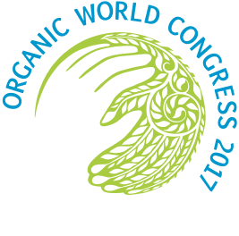

THE ORGANIC WORLD CONGRESS
was organised by the Organic Farming Association of India in collaboration with PDA Trade Fairs, Bengaluru, and in association with IFOAM – Organics International
The event was co-organised by the Ministry of Agriculture & Farmers Welfare, Government of India
The Agricultural and Processed Food Products Export Development Authority (APEDA) under the Ministry of Commerce and Industry supported the event by agreeing to becoming Principal Partner
The State of Uttar Pradesh, through its Ministry of Agriculture, agreed to host the event
The States of Andhra Pradesh, Kerala and Sikkim agreed to become Partner States
The organisers of the OWC 2017 sincerely thank…
Union Ministry of Agriculture & Farmers’ Welfare,
Government of India:
Honourable Union Minister, Shri. Radha Mohan Singh
Shri. Shobhana Pattanayak, Secretary (AC & FW)
Shri. Utpal Kumar Singh, Addl. Secretary
Shri. Ashok Dalwai, Addl. Secretary
Smt. I. Rani Kumudini, Joint Secretary (INM)
Smt. A. Neerja, Joint Secretary
Dr. Vandana Dwivedi, Additional Commissioner (INM)
Union Ministry of Commerce and Industry:
Honourable Union Minister, Shri. Suresh Prabhu
Union Ministry of Women & Child Development:
Honourable Union Minister, Smt. Maneka Gandhi
Minister of Agriculture,
Government of Uttar Pradesh (Host State):
Honourable Minister, Shri. Surya Pratap Shahi
Principal Partner:
APEDA
Mr. Devendra Kumar Singh, Chairman
Dr. Tarun Bajaj, General Manager
Dr. A.K. Yadav, Advisor
Partners
BIOFACH
Digital Empowerment Foundation
Exim Bank, India
Government of Odish
Kerala Organic, Government of Kerala
Naandi Foundation, India
NABARD, India
Organic India, India
Rythu Sadhikara Samstha, Government of Andhra Pradesh
Sahaja Samrudha, India
SARG Vikas Samiti, India
Sarvam Foundation, India
Sikkim Organic Mission, Government of Sikkim
Third World Network, Malaysia
Grants given by many organisations (mainly for travel and other costs of farmers from Asia, Africa and Latin America):
Elements Homestead Products Pvt. Ltd,
Kerala Fair Trade Alliance, Kerala
Global Green Grants
GLS Bank, Germany
Heinrich Böll Foundation
Keystone Foundation, Tamil Nadu
Misereor
Nicholai Fuchs
GLS Treuhand
SwissAid
The Andreas Hermes Akademi
The OAK Foundation
The Swiss Agency for Development and Cooperation, Switzerland
Timbaktu Collective, Andhra Pradesh
Dozens of individuals who donated anonymously to crowd-funding site, milaap.org
The financial assistance received from Research and Development Fund of National Bank for Agriculture and Rural Development (NABARD) towards publication of journal / printing of proceedings of the Congress is gratefully acknowledged.
Presentations Approval Committee
(for farmers’ presentations):
Sujata Goel
Kapil Shah
Ramasamy Selvam
Debal Deb
Nandish B.N.
Sabarmatee Tiki
Sultan Ahmed Ismail
Rama Krishnan S.S.
N. Deva Kumar
Arun K. Sharma
Translators:
Isa Hinojosa (Spanish)
Ana Margarida Pereira (Portuguese)
Kirk Barlow (Chinese)
Rutuja Kamat (Kannada)
Dinesh Kothari (Hindi)
Chinmay (Hindi)
Ram Subramanian (Tamil)
Raja Ganesh (Tamil)
Debjeet Sarangi (Oriya)
Ajay Etikala (Telugu)
Rajan Venkatesh (Hindi & Marathi)
Franz Fardin (French)
Famara Diédhiou (French)
K.P. Illias and Tomy Mathew (Malayalam)
Sumana Nandi (Bengali)
Lucano Alvares (Spanish, Portuguese)
Farmers Track Managers
Kapil Shah
Kavitha Karuganti
Anantha Sayanan
Scientific Peer Review Committee
International Society of Organic Agriculture Research (ISOFAR):
Gerold Rahmann (Thuenen Institute, Germany)
Reza Ardakani (Azad University, Iran)
Victor Olowe (IFSERAR, Nigeria)
A.K. Yadav (APEDA)
H.B. Babalad (UAS, India)
N. Devakumar (UAS, India)
Sujata Goel (OFAI, India)
N. Ravisankar (ICAR-IIFSR, India)
J.P. Saini (HPKVV, India)
National Centre of Organic Farming (NCOF)
Dr Krishan Chandra
Dr T.K. Ghosh
Technology and Innovation Platform of IFOAM-Organics International (TIPI):
Christian Andres (FiBL, Switzerland)
Gabriela Soto (COSA, Costa Rica)
Helga Willer (FiBL, Switzerland)
Farmers’ Power Point Presentation Processing
Karan Manral
Yogita Mehra
Ana Mesquita
Savio D’Souza
Shamika Mone
Binita Shah
Poster preparation and printing (Farmers’ Tracks)
Shamika Mone and Sujata Goel
Manuals and Proceedings (Farmers’ Tracks)
Sujata Goel and Shamika Mone
Post-Conference Farm Tours
Shamika Mone
Binita Shah
Sarvdaman & Mina Patel
Master of Ceremonies (inaugural)
Rohit Shekhar Sharma
Delhi OWC Liaison Officer & Volunteers-In-Charge
Sumana Nandi
Public Relations Team
Binita Shah (Public Relations Offer, OWC)
Sujata Goel
Rajan Venkatesh
Rupesh Pandey
Visits to Delhi Organic Farms
Beejom (Noida)
Rewild Life Biodiversity Farms (Noida)
Shamika Mone
Geodesic Domes
Mango People
Hands-On Demos
Shamika Mone
Illyas K.P.,
N. Gopalkrishnan
K. Natarajan
Sabarmatee Tiki
Design
Orijit Sen and Vikas (PDA)
Catering of Organic and Millet Food for Congress Delegates
Banyan Roots (Sumi Chandresh and Rohit Jain and teams)
Cultural Indian Dance Performances
Nehha Bhatnagar and Sarvam Foundation Dancers
Drummers
Drummers from Kalaithai Arakkattalai (Trust)
R Madeshwaran
R Rajasekar
K Samu
M Dinesh Kumar
M Sasi Kumar
M Suresh Kumar
P Dinesh Kumar
Kamini
V Jagadeeshvaran
Liyoni
Suganya
Sagayam
Merry
M Ramya
K Mahakeerthika
R Suganth
S Murugan
M Vasantha Kumar
Vellaiyathevan
M Dhilipan
Amalanadhan
Krishnan
Bhangra Dancers (Group A)
Sandeep Singla
Shilpa Singla
Simranjeet Kaur
Muskan Garg
Manjinder Kaur
Navjot Kaur
Harmanpreet Kaur
Ashneet Kaur
Tarandeep Kaur
Sandeep Kaur
Ramandeep Kaur
Naseem
Anmolpreet Kaur
Pardeep Kaur
Avantika
Jasmeen Kaur
Harshdeep Kaur
Kamalpreet Kaur
Rajinder Kaur
Dimpi
Prabhjot Kaur
Deepika Goyal
Pooja Mehta
Agyapal Singh
Harwinder Singh
Arpanjot Singh
Abhiraj Singh
Pardeep Singh
Simranjeet Singh
Jashanpreet Singh
Akashdeep Singh
Jarmandeep Singh
Abhey Kumar
Sehajpreet Singh
Arshdeep Singh
Amey Kumar
Arundeep Sandhu
Abhiraj Singh
Gagandeep Singh
Munish Bansal
Jiwan Kumar
Yugraj Sohi
Bhupender Singh (Group B)
Sumreen Kaur
Jaspreet Kaur
Rupinder Kaur
Pratiksha Sharma
Ravneet
Gagandeep Kaur
Simranpreet Kaur
Rajveer Kaur
Kaynat Klate
Simran Taneja
Ashu
Manpreet Kaur
Tanbeer Kaur
Rajveer Kaur
Shelly Sharma
Indra Pahuja
Ajay Kumar
Sukhvir Singh
Rishi Joshi
Gagandeep Singh
Mandeep Singh
Gaganjit Singh
Lovleen Singh
Komalpreet Singh
Sahejdeep Singh
Sahiljot Singh
Mishanjeet Singh
Harveer Singh
Simartpal Singh
Anmol Singh Cheema
Bhupinder Singh
Shunty Kumar
Sunny Kumar
Dimple Kumar
Conference Bags
Dalit Wada (Andhra Pradesh women’s group)
Charaka, Women’s Multipurpose Industrial Cooperative Society Ltd. (Karnataka).
Conference Pens (from sugarcane waste)
Syed Ghani Khan (Mysore)
Carbon Footprint of OWC 2017
Karnika Palwa
Sagar Dhara
PDA Trade Fairs
Pradeep Devaiah
Srinivasan Srikanth
Nazeeba Zarin
Raghupathi
Hannah Victoria
Ananth Narayan
Madan Shidhore
Deepika Dey
Sharath Rao
Kiran Kumar
Aishwarya Chanda
Govinda Raju
Asha Menon
Jeevan Shenoy
Pradeep Kumar
Partha Pran
Sandeep Saurabh Singh
Maruthi
Shankaranand Bhat
Sunil Kumar
Sathya
Anthony James
Congress Souvenir and Guide (PDA Trade Directories)
Dhananjay Sardeshpande
Roy Thomas
Tony Doulton
Infant Vikas
Fabian and Ramesha
IFOAM - Organics International
Markus Arbenz
Denise Godinho
Thomas Cierpka
Segolene Arnould
Omkar Gopalkrishnan
Simon Kufferath
Norman Oehlandt
Niam Holland
Patrick German
Alicia Klaus
Kashif Khan
Patricia Flores
David Gould
Konrad Hauptfleish
Barbara Zilly
Joelle Katto
OFAI Team
Sujata Goel
Kapil Shah
Claude Alvares
Norma Alvares
Riya Sequeira
Roxanne Coutinho
Gerald Edwin D’Mello
Savio D’Souza
Ana Mesquita
Volunteers
Harsh
Arvind
Ashish
Kamran
Piyush
Prayank
Zain
Manish
Pradnya
Nitin
Chetan
Crishoff
Sumit
Aakrsh
Satyam
Bhuvnesh
Bashant
Ankit
Rama
Ravi
Volunteers came from Swaraj University, Shikshantar and Creativity Adda
Delegates from 110 countries attended the Organic World Congress. We thank them for their understanding and for treating us as members of their own families. We thank the organic farmers of the world for making this a farmers' organic world congress.
Organic World Congress
India Exposition Mart Ltd.,
Greater Noida, UP, India
(2017)
